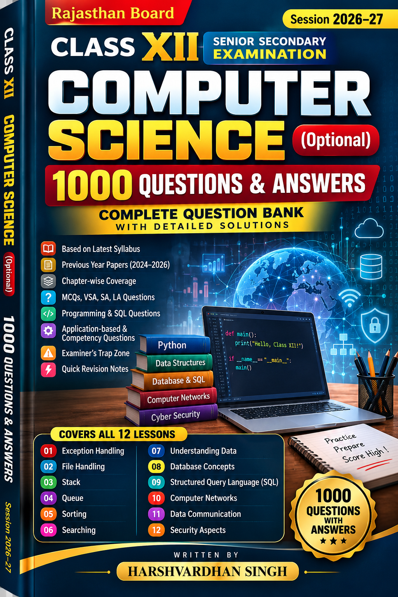

Varied practice
MCQs, fill in the blanks, true/false, very short, short and long-answer questions.
A comprehensive Computer Science question bank designed to help students revise concepts, practise different question formats and build confidence.

Created for Class XII Computer Science students, this question bank brings together practice material in a clear, lesson-wise structure.
MCQs, fill in the blanks, true/false, very short, short and long-answer questions.
Programming and SQL practice to reinforce concepts through application.
Organised across twelve lessons to support focused study and revision.
Move through the syllabus topic by topic and practise at your own pace.
Errors, exceptions and handling techniques
Working with files and file operations
Stack concepts and operations
Queue concepts and operations
Sorting methods and algorithms
Searching techniques and algorithms
Data concepts and interpretation
Database fundamentals and structure
SQL commands and query practice
Network concepts and components
Communication methods and concepts
Digital security and safe computing
Access the Class XII Computer Science question bank at no cost.
This is an Independent Supplementary Educational Resource. It is not an Official Publication of the Rajasthan Board of Secondary Education (RBSE) or any Government Department. It does not guarantee or predict examination questions. Students should also study their prescribed syllabus, textbooks and teacher guidance.